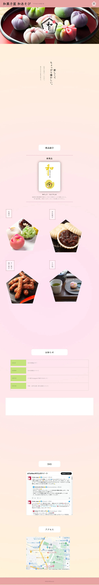

クライアントの要望
若者の集客を目的とした和菓子屋のサイト
システム要件
- 要件定義作成
- ワイヤー,カンプ作成
- ハンバーガーメニュー
- 縦書き表記
デザインコンセプト
要件定義からワイヤー、カンプと、ＷＥＢサイト完成までの一連の流れを初めて自力で全てこなしました。
ロゴやファビコンも自身で制作しており、それを元にサイト全体も五角形のモチーフを中心にデザインしています。
縦書きでの表記をメインにすることによって和の雰囲気を出しつつ、画像やグラデーションの使用やフォントを堅すぎないものにすることで、若者を意識してカジュアルになるようにしました。